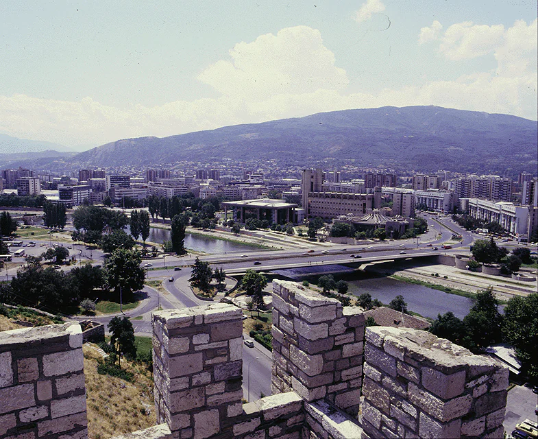
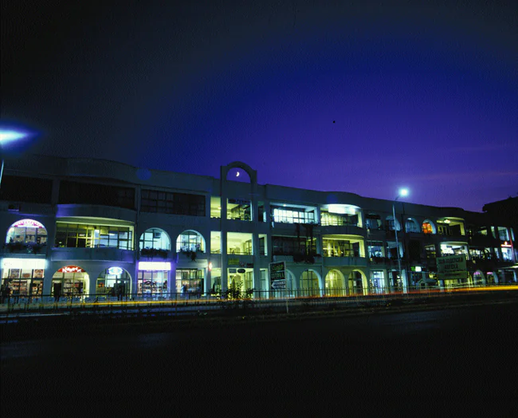
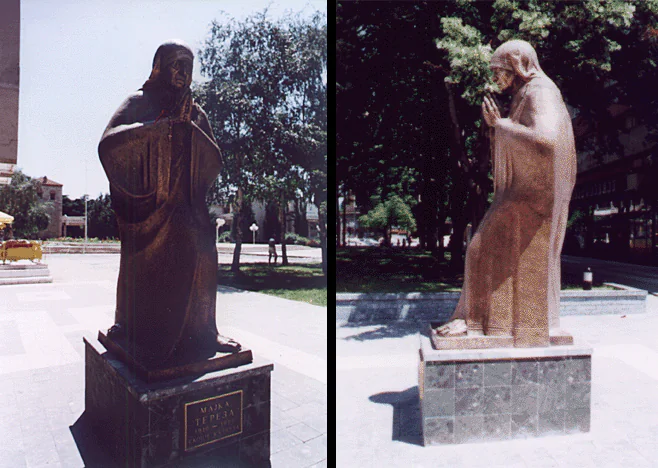
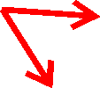

Даут-пашин амам
- Продукција
- УФУЖ и Документарни филм Праг
- Сценарио и режија
- Славко Јаневски и EMAN CANERA
- Година
- 1959
- Трајање
- 00:08

Саборни храм „Св. Климент Охридски“ 12. августа 1990. године извршено је свечано освећење Саборног храма „Св. Климент Охридски“ у присуству бројног високог свештенства на челу са архиепископом господином господином Гаврилом. Свечаности је присуствовало око 80 хиљада грађана Скопља, других градова Македоније и Македонаца из дијаспоре (Аустралија, Канада, САД и више европских земаља).


Поглед са Каменог моста ка старом делу града.

Шеталиште на десној обали реке Вардар.

Скопска тврђава - Кале и река Вардар.

Залазак сунца над старим каменим мостом.


Панорамски поглед на централно подручје Скопља са скопске тврђаве - Кале.

Панорамски поглед на Скопље. У средишњем плану је скопско позориште.

Ристићева палата и трг.

Део улице „Македонија“ ка тргу.


Тржни центар „Мавровка“

Део центра Скопља - „Арапска кућа“.

Зграда новина „Нова Македонија“.

Тржни центар „Буњаковец“.

Стари занати још увек опстају у Скопљу. На фотографији је приказан дућан у коме се израђују алати за домаћинство. Начин израде готово је исти као пре више стотина година.

Део Даут-пашиног амама и зграда Македонске радио-телевизије, у позадини.

Део старе скопске чаршије.

Панорама Скопља ка северозападу.

Ноћна панорама Скопља ка северозападу.

Поглед на Скопље са планине Водно.

Панорама централног градског подручја са скопске тврђаве - Кале.


Споменик Мајци Терези, подигнут 5. септембра 1998. године.





 Аквадукт4 разгледнице
Аквадукт4 разгледнице Кале30 разгледница
Кале30 разгледница Мостови60 разгледница
Мостови60 разгледница Кеј58 разгледница
Кеј58 разгледница Трг46 разгледница
Трг46 разгледница Објекти66 разгледница
Објекти66 разгледница Хришћански храмови19 разгледница
Хришћански храмови19 разгледница Муслимански објекти33 разгледнице
Муслимански објекти33 разгледнице Официрски дом29 разгледница
Официрски дом29 разгледница Позориште28 разгледница
Позориште28 разгледница Железничка станица13 разгледница
Железничка станица13 разгледница Школе36 разгледница
Школе36 разгледница Паркови12 разгледница
Паркови12 разгледница Пијаце18 разгледница
Пијаце18 разгледница Улице38 разгледница
Улице38 разгледница Панорама I60 разгледница
Панорама I60 разгледница Панорама II30 разгледница
Панорама II30 разгледница Колажи55 разгледница
Колажи55 разгледница Поплаве9 разгледница
Поплаве9 разгледница Земљотрес27 разгледница
Земљотрес27 разгледница Скопље 200026 разгледница
Скопље 200026 разгледница